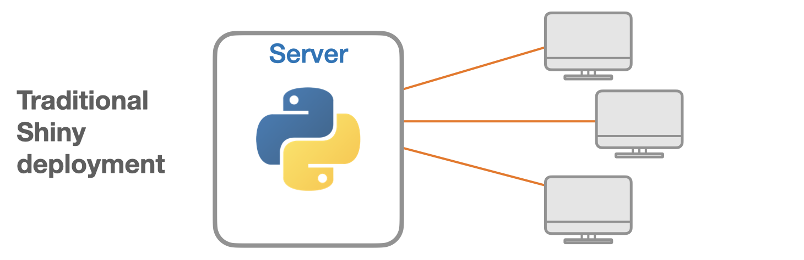
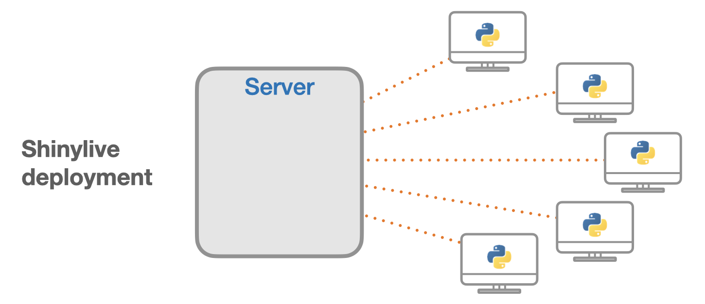

| Package | Version |
|---|---|
| affine | 2.4.0 |
| affine-tests | 2.4.0 |
| aiohttp | 3.9.5 |
| aiohttp-tests | 3.9.5 |
| aiosignal | 1.3.1 |
| altair | 5.4.1 |
| annotated-types | 0.6.0 |
| annotated-types-tests | 0.6.0 |
| anyio | 4.4.0 |
| anywidget | 0.9.15 |
| appdirs | 1.4.4 |
| apsw | 3.47.2.0 |
| argon2-cffi | 23.1.0 |
| argon2-cffi-bindings | 21.2.0 |
| arro3-compute | 0.4.1 |
| arro3-core | 0.4.1 |
| arro3-io | 0.4.1 |
| asciitree | 0.3.3 |
| asgiref | 3.8.1 |
| astropy | 7.0.0 |
| astropy_iers_data | 0.2024.4.22.0.29.50 |
| astropy_iers_data-tests | 0.2024.4.22.0.29.50 |
| asttokens | 2.4.1 |
| async-timeout | 4.0.3 |
| atomicwrites | 1.4.1 |
| attrs | 23.2.0 |
| autograd | 1.7.0 |
| autograd-tests | 1.7.0 |
| awkward-cpp | 44 |
| b2d | 0.7.4 |
| bcrypt | 4.1.2 |
| beautifulsoup4 | 4.12.3 |
| beautifulsoup4-tests | 4.12.3 |
| biopython | 1.84 |
| bitarray | 2.9.2 |
| bitarray-tests | 2.9.2 |
| bitstring | 4.1.4 |
| black | 24.8.0 |
| bleach | 6.1.0 |
| bokeh | 3.6.0 |
| boost-histogram | 1.5.0 |
| branca | 0.7.2 |
| brotli | 1.1.0 |
| buffer-test | 0.1.1 |
| cachetools | 5.3.3 |
| Cartopy | 0.24.1 |
| Cartopy-tests | 0.24.1 |
| casadi | 3.6.7 |
| cbor-diag | 1.0.1 |
| certifi | 2024.12.14 |
| cffi | 1.17.1 |
| cffi_example | 0.1 |
| cftime | 1.6.4.post1 |
| charset-normalizer | 3.3.2 |
| clarabel | 0.9.0 |
| click | 8.1.7 |
| cligj | 0.7.2 |
| clingo | 5.7.1 |
| cloudpickle | 3.0.0 |
| cmyt | 2.0.0 |
| cmyt-tests | 2.0.0 |
| colorspacious | 1.1.2 |
| comm | 0.2.2 |
| contourpy | 1.3.0 |
| coolprop | 6.6.0 |
| coolprop-tests | 6.6.0 |
| coverage | 7.4.4 |
| cpp-exceptions-test | 0.1 |
| cpp-exceptions-test2 | 1.0 |
| cramjam | 2.8.3 |
| crc32c | 2.7.1 |
| cryptography | 42.0.5 |
| css-inline | 0.14.6 |
| cssselect | 1.2.0 |
| cvxpy-base | 1.5.1 |
| cvxpy-base-tests | 1.5.1 |
| cycler | 0.12.1 |
| cysignals | 1.12.2 |
| cytoolz | 0.12.3 |
| cytoolz-tests | 0.12.3 |
| decorator | 5.1.1 |
| demes | 0.2.3 |
| deprecation | 2.1.0 |
| distlib | 0.3.8 |
| docutils | 0.21.1 |
| duckdb | 1.1.2 |
| ewah_bool_utils | 1.2.2 |
| ewah_bool_utils-tests | 1.2.2 |
| exceptiongroup | 1.2.1 |
| executing | 2.0.1 |
| faicons | 0.2.2 |
| fastparquet | 2024.5.0 |
| fiona | 1.9.5 |
| fiona-tests | 1.9.5 |
| fonttools | 4.51.0 |
| fpcast-test | 0.1.1 |
| freesasa | 2.2.1 |
| frozenlist | 1.4.1 |
| fsspec | 2024.3.1 |
| fsspec-tests | 2024.3.1 |
| future | 1.0.0 |
| future-tests | 1.0.0 |
| galpy | 1.10.1 |
| gdal | 3.8.3 |
| gensim | 4.3.3 |
| gensim-tests | 4.3.3 |
| geopandas | 1.0.1 |
| geopandas-tests | 1.0.1 |
| geos | 3.12.1 |
| gmpy2 | 2.1.5 |
| gsw | 3.6.19 |
| gsw-tests | 3.6.19 |
| h3 | 4.2.1 |
| h5py | 3.12.1 |
| h5py-tests | 3.12.1 |
| hashlib | 1.0.0 |
| html5lib | 1.1 |
| htmltools | 0.6.0 |
| httpx | 0.28.1 |
| idna | 3.7 |
| igraph | 0.11.4 |
| imageio | 2.36.0 |
| iminuit | 2.30.1 |
| iniconfig | 2.0.0 |
| ipyleaflet | 0.19.2 |
| ipython | 8.23.0 |
| ipython-tests | 8.23.0 |
| ipywidgets | 8.1.3 |
| jedi | 0.19.1 |
| jedi-tests | 0.19.1 |
| Jinja2 | 3.1.3 |
| joblib | 1.4.0 |
| joblib-tests | 1.4.0 |
| jsonschema | 4.21.1 |
| jsonschema_specifications | 2023.12.1 |
| jsonschema_specifications-tests | 2023.12.1 |
| jsonschema-tests | 4.21.1 |
| jupyter-core | 5.7.2 |
| jupyter-leaflet | 0.19.2 |
| jupyter_core | 5.7.2 |
| jupyterlab-widgets | 3.0.11 |
| kiwisolver | 1.4.5 |
| lakers-python | 0.4.1 |
| lazy_loader | 0.4 |
| lazy_loader-tests | 0.4 |
| lazy-object-proxy | 1.10.0 |
| libcst | 1.4.0 |
| libcst-tests | 1.4.0 |
| libhdf5 | 1.12.1 |
| libheif | 1.12.0 |
| libmagic | 5.42 |
| libsass | 0.23.0 |
| lightgbm | 4.5.0 |
| linkify-it-py | 2.0.3 |
| logbook | 1.7.0.post0 |
| lxml | 5.2.1 |
| lzma | 1.0.0 |
| markdown-it-py | 3.0.0 |
| MarkupSafe | 2.1.5 |
| matplotlib | 3.8.4 |
| matplotlib-inline | 0.1.7 |
| matplotlib-pyodide | 0.2.3 |
| matplotlib-tests | 3.8.4 |
| mdit-py-plugins | 0.4.1 |
| mdurl | 0.1.2 |
| memory-allocator | 0.1.4 |
| micropip | 0.8.0 |
| mizani | 0.13.1 |
| mmh3 | 4.1.0 |
| mne | 1.8.0 |
| mne-tests | 1.8.0 |
| more-itertools | 10.2.0 |
| mpmath | 1.3.0 |
| mpmath-tests | 1.3.0 |
| msgpack | 1.1.0 |
| msgspec | 0.18.6 |
| msprime | 1.3.3 |
| multidict | 6.0.5 |
| munch | 4.0.0 |
| mypy | 1.9.0 |
| mypy-extensions | 1.0.0 |
| mypy-tests | 1.9.0 |
| narwhals | 1.12.1 |
| netcdf4 | 1.7.2 |
| networkx | 3.4.2 |
| networkx-tests | 3.4.2 |
| newick | 1.9.0 |
| nh3 | 0.2.17 |
| nlopt | 2.9.1 |
| nltk | 3.8.1 |
| nltk-tests | 3.8.1 |
| numcodecs | 0.13.1 |
| numcodecs-tests | 0.13.1 |
| numpy | 2.0.2 |
| numpy-tests | 2.0.2 |
| openblas | 0.3.26 |
| opencv-python | 4.10.0.84 |
| openssl | 1.1.1w |
| optlang | 1.8.1 |
| optlang-tests | 1.8.1 |
| orjson | 3.10.1 |
| packaging | 24.2 |
| palmerpenguins | 0.1.4 |
| pandas | 2.2.3 |
| pandas-tests | 2.2.3 |
| parso | 0.8.4 |
| pathspec | 0.12.1 |
| patsy | 0.5.6 |
| patsy-tests | 0.5.6 |
| pcodec | 0.3.3 |
| peewee | 3.17.3 |
| peewee-tests | 3.17.3 |
| pi-heif | 0.21.0 |
| Pillow | 10.2.0 |
| pillow-heif | 0.20.0 |
| pkgconfig | 1.5.5 |
| platformdirs | 4.2.2 |
| plotly | 5.23.0 |
| plotnine | 0.14.5 |
| pluggy | 1.5.0 |
| polars | 1.18.0 |
| pplpy | 0.8.10 |
| primecountpy | 0.1.0 |
| prompt_toolkit | 3.0.43 |
| protobuf | 5.29.2 |
| psygnal | 0.12.0 |
| pure-eval | 0.2.3 |
| py | 1.11.0 |
| pyarrow | 18.1.0 |
| pyclipper | 1.3.0.post5 |
| pycparser | 2.22 |
| pycryptodome | 3.20.0 |
| pycryptodome-tests | 3.20.0 |
| pydantic | 2.10.5 |
| pydantic_core | 2.27.2 |
| pydecimal | 1.0.0 |
| pydoc_data | 1.0.0 |
| pyerfa | 2.0.1.4 |
| pyerfa-tests | 2.0.1.4 |
| pygame-ce | 2.4.1 |
| pygame-ce-tests | 2.4.1 |
| Pygments | 2.17.2 |
| pyheif | 0.8.0 |
| pyiceberg | 0.6.0 |
| pyinstrument | 4.4.0 |
| pynacl | 1.5.0 |
| pyodide-http | 0.2.1 |
| pyodide-unix-timezones | 1.0.0 |
| pyparsing | 3.1.2 |
| pypng | 0.20220715.0 |
| pyproj | 3.6.1 |
| pyrsistent | 0.20.0 |
| pysam | 0.22.0 |
| pyshp | 2.3.1 |
| pytest | 8.1.1 |
| pytest-asyncio | 0.23.7 |
| pytest-benchmark | 4.0.0 |
| python-dateutil | 2.9.0.post0 |
| python-flint | 0.6.0 |
| python-magic | 0.4.27 |
| python-multipart | 0.0.9 |
| python-sat | 1.8.dev13 |
| python-solvespace | 3.0.8 |
| pytz | 2024.1 |
| pywavelets | 1.7.0 |
| pywavelets-tests | 1.7.0 |
| pyxel | 1.9.10 |
| pyxirr | 0.10.6 |
| pyyaml | 6.0.2 |
| qrcode | 7.4.2 |
| rasterio | 1.4.2 |
| rateslib | 1.6.0 |
| rebound | 4.4.3 |
| reboundx | 4.3.0 |
| referencing | 0.34.0 |
| referencing-tests | 0.34.0 |
| regex | 2024.9.11 |
| regex-tests | 2024.9.11 |
| requests | 2.31.0 |
| retrying | 1.3.4 |
| rich | 13.7.1 |
| river | 0.22.0 |
| river-tests | 0.22.0 |
| RobotRaconteur | 1.2.2 |
| rpds-py | 0.18.0 |
| ruamel.yaml | 0.18.6 |
| rust-abi-test | 1.0 |
| rust-panic-test | 1.0 |
| scikit-image | 0.25.0 |
| scikit-image-tests | 0.25.0 |
| scikit-learn | 1.6.1 |
| scikit-learn-tests | 1.6.1 |
| scipy | 1.14.1 |
| scipy-tests | 1.14.1 |
| screed | 1.1.3 |
| screed-tests | 1.1.3 |
| seaborn | 0.13.2 |
| setuptools | 69.5.1 |
| shapely | 2.0.6 |
| shapely-tests | 2.0.6 |
| sharedlib-test | 1.0 |
| sharedlib-test-py | 1.0 |
| shiny | 1.4.0 |
| shinyswatch | 0.8.0 |
| shinywidgets | 0.5.2 |
| simplejson | 3.19.2 |
| simplejson-tests | 3.19.2 |
| sisl | 0.15.1 |
| sisl-tests | 0.15.1 |
| siuba | 0.4.4 |
| six | 1.16.0 |
| smart-open | 7.0.4 |
| sniffio | 1.3.1 |
| sortedcontainers | 2.4.0 |
| soupsieve | 2.5 |
| sourmash | 4.8.11 |
| soxr | 0.5.0.post1 |
| sparseqr | 1.2 |
| sqlalchemy | 2.0.29 |
| sqlalchemy-tests | 2.0.29 |
| sqlite3 | 1.0.0 |
| ssl | 1.0.0 |
| stack-data | 0.6.3 |
| starlette | 0.38.1 |
| statsmodels | 0.14.4 |
| strictyaml | 1.7.3 |
| suitesparse | 5.11.0 |
| svgwrite | 1.4.3 |
| swiglpk | 5.0.10 |
| sympy | 1.13.3 |
| sympy-tests | 1.13.3 |
| tblib | 3.0.0 |
| tenacity | 8.5.0 |
| termcolor | 2.4.0 |
| test | 1.0.0 |
| texttable | 1.7.0 |
| threadpoolctl | 3.5.0 |
| tiktoken | 0.8.0 |
| tomli | 2.0.1 |
| tomli-w | 1.0.0 |
| toolz | 0.12.1 |
| toolz-tests | 0.12.1 |
| tqdm | 4.66.2 |
| traitlets | 5.14.3 |
| traitlets-tests | 5.14.3 |
| traits | 6.4.3 |
| traits-tests | 6.4.3 |
| traittypes | 0.2.1 |
| tree-sitter | 0.23.2 |
| tree-sitter-go | 0.23.3 |
| tree-sitter-java | 0.23.4 |
| tree-sitter-python | 0.23.4 |
| tskit | 0.6.0 |
| typing-extensions | 4.11.0 |
| tzdata | 2024.1 |
| uc-micro-py | 1.0.3 |
| uncertainties | 3.1.7 |
| uncertainties-tests | 3.1.7 |
| unyt | 3.0.3 |
| unyt-tests | 3.0.3 |
| urllib3 | 2.2.3 |
| vega-datasets | 0.9.0 |
| vega-datasets-tests | 0.9.0 |
| wcwidth | 0.2.13 |
| webencodings | 0.5.1 |
| wordcloud | 1.9.3 |
| wrapt | 1.16.0 |
| xarray | 2024.11.0 |
| xarray-tests | 2024.11.0 |
| xgboost | 2.1.2 |
| xlrd | 2.0.1 |
| xxhash | 3.4.1 |
| xyzservices | 2024.4.0 |
| xyzservices-tests | 2024.4.0 |
| yarl | 1.9.4 |
| yt | 4.3.1 |
| zarr | 2.18.3 |
| zarr-tests | 2.18.3 |
| zengl | 2.7.1 |
| zfpy | 1.0.1 |
| zstandard | 0.22.0 |
Shinylive: Shiny + WebAssembly
Shinylive allows you to run Shiny applications entirely in a web browser, without the need for a separate server running Python.
The traditional way of deploying Shiny involves in a separate server and client: the server runs Python and Shiny, and clients connect via the web browser. Each client keeps an open websocket connection as long as they are using the application.

When an application is deployed with Shinylive, Python and Shiny run in the web browser: the browser is effectively both the client and server for the application. There is a web server that serves files, but it does not run Python or Shiny—it can be a “dumb” static web server.

If you’ve looked at any of the documentation on this web site, or have played with any of the examples at shinylive.io, you have already used Shinylive. The examples on this site (with a handful of exceptions) and the shinylive.io examples all run using Shinylive, meaning that they run in your web browser.
This is all possible because of the magic of WebAssembly and Pyodide.
- WebAssembly (wasm) is a binary format for compiled programs that can run in a web browser at near-native speeds.
- Pyodide is a port of Python and many packages, compiled to WebAssembly.
Applications deployed with Shinylive have some advantages and disadvantages compared to a traditional Shiny deployment. The advantages include:
- No installation: No need to install Python or Shiny on a computer.
- Easy sharing: Share applications with just a URL.
- Easy deployment: Applications can be deployed to any static web hosting service.
- Easy scaling: Since applications can be served as static files on a “dumb” web server it is easy to scale to high traffic loads.
- Security: Because the code is not running on a server, it eliminates a class of potential security risks. The code runs in the client web browser’s code sandbox, which a platform that has been battle tested over the years.
Some of the disadvantages of using Shinylive deployments compared to traditional Shiny deployments:
- Fewer packages: Not all Python packages are available in Pyodide.
- Large download size: The downloaded payload size may be significantly larger. Downloading Pyodide and Python packages to run a Shiny application requires about 13MB of data. Other packages can significantly increase the amount of data. For example, numpy is 7.5 MB, pandas is 13 MB, and matplotlib is 11.5 MB. However, all of this data will be cached by the browser so that it will load quickly in subsequent runs.
- No secrets: Code and data for the application must be sent to the browser, so it can’t be kept secret from the user.
- Restricted network: For security reasons, the web browser itself imposes restrictions on network communication.
For certain types of Shiny applications, some of the limitations can be worked around by pre-processing a data set and including it with the application.
One important difference between traditional Shiny and Shinylive deployments is that compute power is shifted from the server to the client. In many cases, the client browser will have more compute power than a server, especially since the compute power of the user’s machine is not shared across multiple users. However, in other cases, this can be a roadblock, such as when a powerful server is needed to perform very intensive computations or requires access to a private data store.
Python packages
The Shinylive distribution is built on Pyodide, and contains a number of additional packages on top of the standard Pyodide distribution.
It is also possible to use other Python packages, provided that they are packaged as wheels, and contain no compiled code. Additionally, they must not use features that aren’t available in Pyodide. For example, if a package has code that uses urllib.request, it won’t work in Pyodide.
Installed packages
The Shinylive distribution includes packages from Pyodide 0.27.3, as well as some additional Shiny-related packages. See this page for a list of packages included in Pyodide.
Shinylive includes the following packages. Most are part of the Pyodide distribution, and a few of them are added by Shinylive.
Testing whether a package is available
The Shinylive distribution includes many packages, but you may want to use one that is not included.
It is possible to install packages using Pyodide’s micropip package. To do that, simply visit the Shinylive examples page and run the following in the Python console:
import micropip
await micropip.install("mypackage")
import mypackageIf that works without errors, then your package is usable in a Shinylive application. (There are some exceptions, where a package will load but not be fully usable in Pyodide.)
The micropip.install command will install the package from PyPI by default. However, you can provide a URL that points directly to your package, like https://example.com/mypackage-1.0-py3-none-any.whl.
Requiring extra packages with requirements.txt
To use extra packages as part of your application, you can add a requirements.txt file to your application, as demonstrated in the extra packages example. The format of the requirements.txt file is similar to a “normal” requirements.txt file. For example, it could look like this:
isodate
attrs==21.4.0Each time someone runs your Shiny application, their web browser will fetch those packages from PyPI. It will then install the packages to a virtual file system (VFS); when the user closes the page or navigates away from it, the VFS is discarded. If the user goes back and runs the application again, those files can be fetched from the browser cache instead of from PyPI.